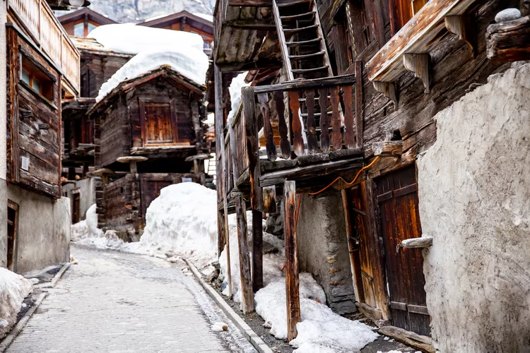
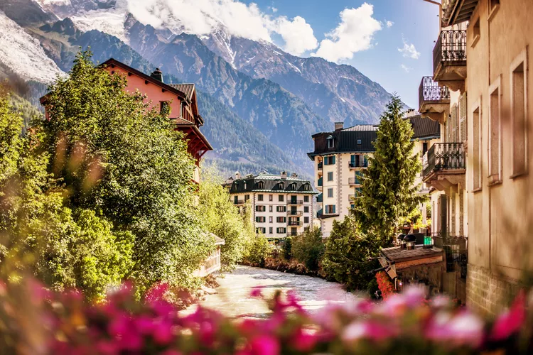
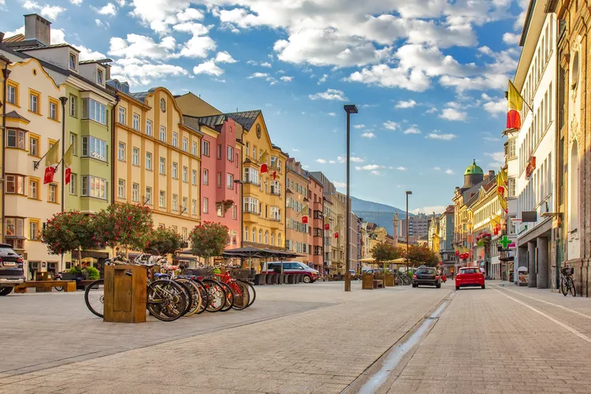
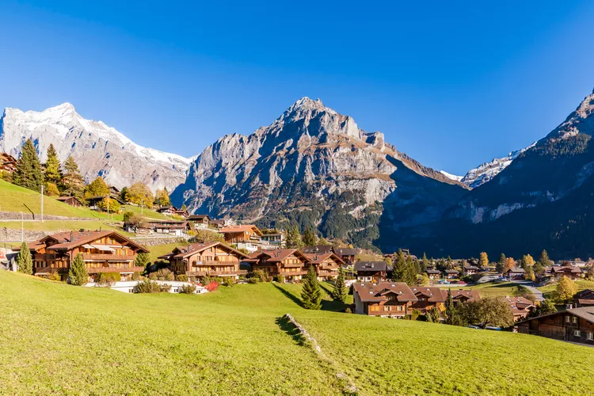

Whether you're heading out into nature for a short scenic hike or camping in the middle of nowhere for a week, the goal might be to unplug and put your phone away. But it's hard to stay offline entirely when the scenes are so perfectly Instagrammable. While we can't help you with a weak Wi-Fi signal or that steep uphill hike, we can help you find the perfect captions for those nature pics you snap during your outdoor adventure. Your followers will love these inspirational, relatable, and funny nature quotes — so pick one for your next post and watch the likes roll in.
Mountains Places Visit
Zermatt, Switzerland
 Zermatt comes highly recommended by several of our travel experts — and it’s not just because of the breathtaking view of the Matterhorn (although that’s certainly one of the town’s major draws). “While touristy, Zermatt is a carless town with a rich history, and it is one of the original Swiss tourist mountain towns,” says Dave Miller, owner of International Alpine Guides. He recommends taking the Gornergrat Railway for “more amazing views of the Matterhorn as well as all the other high alpine peaks surrounding Zermatt.” In town, says Zeb Blais, an IFMGA guide and founder of Blackbird Mountain Guides, “Swiss food and drink options abound on every street,” and Duncan Greenfield-Turk, chief travel designer at Global Travel Moments, suggests booking a room at The Omnia, which offers “killer views in a killer location.”
Chamonix, France
For what Blais describes as “unparalleled access to hiking, climbing, trail running, biking, and even paragliding,” you’ll want to head to Chamonix. “Chamonix is the epicenter of alpinism and ski mountaineering in the Alps, if not the world,” says Miller. “Located in a deep valley surrounded by the French Alps that reach up to almost 16,000 feet, the town embodies the rich alpine sporting culture.” When you need a break from heart-pumping activities, Miller suggests embarking on a trip up the Aiguille du Midi cable car, an experience that takes you “up to the high glaciers at over 12,000 feet in about 20 minutes.”
Innsbruck, Austria
Innsbruck may technically be a city, but Travel + Leisure A-List travel advisor Gwen Kozlowski says it has all of the makings of the traditional mountain town — plus a few more delightful features. “Yes, there is a lift right from the center of the town to the mountains, allowing hiking, a visit of an alpine zoo, or just drinks on the mountain overlooking the valley. However, Innsbruck is so much more,” she says. “It’s a cultural gem, with beautiful palaces, great shopping, and fabulous local restaurants. A simple day trip takes travelers to gorgeous monasteries, national parks, and even a schnapps trail.”
Grindelwald, Switzerland
There is a seemingly endless number of picturesque mountain towns in Switzerland, but Nadya Phelan, a Europe expert at Goway, says Grindelwald cannot be missed. “This quaint Swiss town feels at the end of the road, where a train runs to the north and ski hills and hiking trails are part of your view,” she says. During the day, Phelan suggests enjoying a cliff walk or casual hike followed by fondue or a chocolate tasting. For more mountain views, she recommends travelers “go to the top of Jungfraujoch by train to stand on top of this mountain and enjoy the spectacular views of glaciers and mountains that surround you.” Temple adds that Grindelwald is great for families: “The Grindelwald First cable car and adventure pass are so much fun and well worth it.”